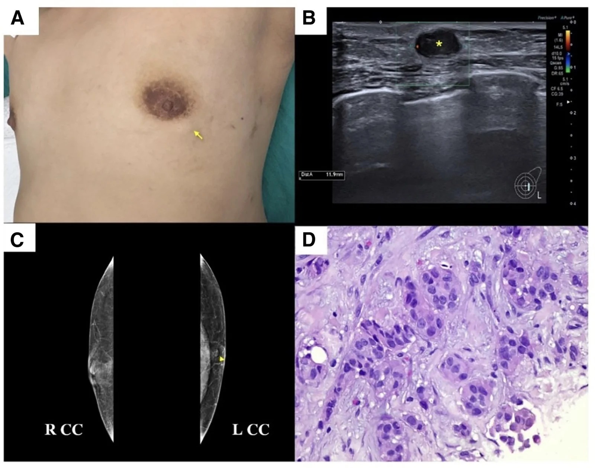

1600 — Đánh giá ngực TRƯỚC phẫu thuật tạo hình ngực nam hóa (GACMS) / Preoperative breast evaluation before gender-affirming chest masculinization surgery
Tags: pattern:danh-gia-nguy-co pattern:khoi-vu pattern:vi-voi-hoa pattern:rfgt vung:vu vung:thanh-nguc score:Tyrer-Cuzick score:IBIS score:BI-RADS protocol:nhu-anh protocol:sieu-am-vu protocol:MRI-vu incidentaloma:u-tuyen-con-lai
Mức chắc chắn (certainty): tổng hợp y văn (literature synthesis) — tổng hợp từ y văn mở qua Europe PMC (Annals of Surgical Oncology 2026 scoping review, Plast Reconstr Surg Glob Open 2026 ca + abstract, Annals of Surgery Open 2026), có ca nguyên văn dùng cho quiz (ảnh CC BY-NC-ND, giữ nguyên bản).
1. Tổng quan — "mastectomy" không phải cắt tuyến toàn bộ: vì sao vẫn còn mô tuyến và vì sao phải đánh giá TRƯỚC mổ
- Thuật ngữ quyết định cách theo dõi: "gender-affirming mastectomy" (GAM) là tên gọi dễ gây nhầm — phần lớn ca là giảm tuyến dưới toàn phần (subtotal glandular reduction), không phải cắt tuyến triệt để như mastectomy ung thư. Vì mục tiêu là đường nét ngực nam tính + bảo tồn núm–quàng (NAC), phẫu thuật viên giữ lại mô tuyến quanh núm và dưới da để nuôi núm → tồn tại mô tuyến vú còn lại (retained fibroglandular tissue — RFGT) (Vyas KS et al., Ann Surg Open 2026; Chu C et al., Ann Surg Oncol 2026).
- RFGT nhiều hay ít tùy kỹ thuật (định lượng): trong loạt mổ dự phòng/ung thư, RFGT được xác định trên MRI ở 50% ca núm–quàng bảo tồn (nipple-sparing) và 13% ca da bảo tồn (skin-sparing); RFGT là yếu tố góp phần chính vào tái phát (Wu L et al., Ann Surg Open 2026, trích nghiên cứu MRI định lượng).
- Quy mô dân số: ước 1,3 triệu người trưởng thành TGNB ở Mỹ, trong đó 35,9% (480.000) là nam chuyển giới và 25,6% (341.800) là người phi nhị phân; 25–35% người TGNB chọn phẫu thuật khẳng định giới, và GAM là phẫu thuật đầu tiên phổ biến nhất (Chu C et al. 2026).
- Nguy cơ nền: 13,1% người sinh ra với giới tính nữ (AFAB) sẽ có chẩn đoán ung thư vú trong đời; đa số bệnh nhân GAM ở tuổi 20–30, tức chưa tới đỉnh nguy cơ 65–74 tuổi — nên nguy cơ tuyệt đối thấp, nhưng không bằng 0.
- Bằng chứng bệnh lý trên bệnh phẩm (số liệu chính):
- Scoping review 13 nghiên cứu (Mỹ, 10 năm): tổng 42 ca atypia, 6 DCIS, 1 Paget, 10 IDC. Trong 9 nghiên cứu chỉ xét bệnh phẩm GAM thường quy (3.869 ca): 42 atypia, 5 DCIS, 1 Paget, 3 IDC. 7 IDC + 1 DCIS được phát hiện TRƯỚC mổ qua tầm soát và được điều trị phối hợp với phẫu thuật vú (Chu C et al. 2026).
- 880 ca GAM: 7 (0,8%) atypia, 0 ung thư (Chu C et al. 2026).
- 865 ca / 1.730 vú: 12 (0,7%) có tổn thương nguy cơ cao hoặc ác; bệnh nhân < 25 tuổi giảm 70% khả năng có phát hiện tình cờ so với lớn tuổi hơn (Chu C et al. 2026).
- 286 ca GAM: 2 (0,7%) ung thư tình cờ (1 DCIS kèm ADH, 1 IDC).
- 148 ca: ADH 2% (3/148), carcinoma in situ 1% (1/148).
- 318 ca: 6,6% có "tăng nguy cơ", 5,3% tổn thương tăng sinh, 0,6% ADH, 0,6% IDC.
- Khảo sát 288 người tìm GACMS (4/2019–12/2024): tuổi trung bình 26,6 ± 7,4; BMI 27,4 ± 6,2; 33,3% (96/288) có tiền sử gia đình ung thư vú (13 bậc 1, 74 bậc 2); 15 người xét nghiệm gen → 3 mang đột biến bệnh lý (BRCA2, PALB2, TP53); 35 người chụp nhũ ảnh trước mổ → 1 có đặc điểm nguy cơ cao; IBIS/Tyrer–Cuzick tính được ở 80 người: trung bình 16,1 ± 5,5 (6,7–39,2), trong đó 56,2% nguy cơ trung bình, 23,8% trung cấp (15–19%), 20,0% cao (≥ 20%); 8 người được chuyển phẫu thuật vú và 15 chuyển di truyền; 4/16 người nguy cơ cao (25%) chọn cắt tuyến dự phòng; giải phẫu bệnh 1 ca DCIS độ trung bình (abstract, Plast Reconstr Surg Glob Open 2026, PMC13340889 — bài không có danh sách tác giả trong Europe PMC nên ghi theo tạp chí).
- Ngưỡng "nguy cơ cao" đang được dùng trong tài liệu GACMS: hơn 50% người tìm GACMS có Tyrer–Cuzick ≥ 17% trong một nghiên cứu Annals of Surgical Oncology 2024 (trích trong Vyas KS et al. 2026) — tức ngưỡng hành động thực tế thấp hơn ngưỡng 20% cổ điển, và đây là lý do không thể bỏ qua bước mô hình hóa nguy cơ.
- TẠI SAO hình ảnh trông như vậy (vật lý + mô bệnh):
- Mô tuyến T1 thấp, T2 trung bình, ngấm thuốc; mỡ T1 cao, T2 cao, không ngấm. Sau GACMS, ngực gồm chủ yếu mỡ + sẹo xơ + đảo mô tuyến nhỏ quanh núm → trên MRI, RFGT hiện là đảo tín hiệu T1 thấp/T2 trung bình ngấm thuốc trong nền mỡ sáng; đây là phương tiện định lượng RFGT tốt nhất.
- Nhũ ảnh ở ngực "nam hóa": thể tích nhỏ, mô tuyến bị nén sát da → khó nhưng vẫn làm được; nhũ ảnh vẫn nhạy nhất với vi vôi hóa: độ nhạy cho DCIS 87–95% so với siêu âm 47–71% (Wu L et al. 2026). Vì vậy "ngực nhỏ nên không chụp được" là lý do sai — ACR khuyến cáo nhũ ảnh là phương thức đầu tay cho nam giới có triệu chứng vú.
- Siêu âm: phụ thuộc người làm, tốt để định hướng khối sờ thấy và hướng dẫn sinh thiết, không thay thế nhũ ảnh để loại trừ DCIS.
- Sẹo và mô tuyến còn lại chồng lấp: mô tuyến dưới quầng nằm ngay dưới sẹo chu vi quầng → khối mới ở đây rất dễ bị quy cho sẹo, đúng cơ chế ca 44 tuổi dưới đây bị bỏ qua 2 năm.
2. Mẫu hình (pattern) + chẩn đoán phân biệt theo bối cảnh trước mổ (Gamut)
- Khuôn 1 — Khối sờ thấy trước mổ, ngực nhỏ, tuổi 20–35. Gamut: fibroadenoma vs gynecomastia dạng nốt vs papilloma vs IDC vs nang thượng bì/u mỡ dưới da. Chốt: BI-RADS trên siêu âm + nhũ ảnh, sinh thiết lõi nếu B4/B5.
- Khuôn 2 — Vi vôi hóa trên nhũ ảnh trước mổ. Gamut: DCIS vs vôi hóa tuyến lành vs vôi hóa da/sẹo vs vôi hóa do xạ. Chốt: hình thái cụm + phân bố ống tuyến; không bỏ qua vì "ngực nam ít mô tuyến".
- Khuôn 3 — Tiết dịch núm / chảy máu đầu vú. Gamut: papilloma trong ống vs DCIS thể nhú vs viêm ống quanh núm (Zuska) vs Paget núm. Chốt: siêu âm ống tuyến + nội soi ống tuyến/xét nghiệm dịch; Paget = sinh thiết da núm.
- Khuôn 4 — Ngực không triệu chứng, có tiền sử gia đình hoặc đột biến gen. Gamut: nguy cơ cao di truyền (BRCA1/2, PALB2, TP53) vs nguy cơ trung bình cộng gộp vs nguy cơ dân số. Chốt: mô hình nguy cơ + xét nghiệm gen, không dựa cảm tính "còn trẻ".
- Khuôn 5 — Mô tuyến "to ra" khi dùng testosterone. Gamut: gynecomastia do hormone vs tăng sinh tuyến sinh lý vs khối thật vs hoại tử mỡ. Chốt: testosterone làm thay đổi hình thái mô (nhiều mô sợi, apocrine metaplasia, vôi hóa) nhưng 4 nghiên cứu KHÔNG thấy tăng tổn thương có ý nghĩa — không dùng để trấn an, cũng không dùng để hoãn mổ.
- Khuôn 6 — Tổn thương chỉ phát hiện trên BỆNH PHẨM sau mổ. Gamut: ADH/ALH/LCIS vs DCIS vs IDC vs papilloma có/không atypia vs thay đổi do testosterone. Chốt: bắt buộc gửi toàn bộ bệnh phẩm và hội chẩn nếu B3 trở lên (nối bài 513).
3. Bảng so sánh phân biệt (ma trận đối chiếu)
| Thực thể (entity) | Hình ảnh điển hình (nhũ ảnh/DBT, siêu âm, MRI) | Chốt vào (rule-in) | Chốt loại (rule-out) | Gợi ý xác nhận |
|---|---|---|---|---|
| Fibroadenoma | Oval, bờ rõ, đồng nhất, có vách; nhũ ảnh: khối bờ rõ không vôi hóa; MRI: T1 trung bình, T2 sáng, ngấm đều chậm | Oval + bờ rõ + đồng nhất + không xâm lấn ở tuổi < 35 | Bờ không đều, đặc không đồng nhất, lớn nhanh sau 35 tuổi → không phải FA | Siêu âm ± core; theo dõi nếu BI-RADS 3 |
| Gynecomastia dạng nốt | Mô tuyến hình nan hoa/lưỡi từ núm, đối xứng, không tạo khối tròn; hay ở nam dùng hormone | Đối xứng hai bên + hình nan hoa + không khối tròn | Khối tròn lệch tâm + vi vôi hóa + một bên → nghĩ ung thư (nối bài 596) | Siêu âm + nhũ ảnh hai bên |
| ADH / ALH / LCIS (B3) | Thường không thấy trên hình ảnh; nếu thấy thì là vi vôi hóa cụm hoặc mô tuyến dày | Vi vôi hóa cụm + mô học B3 trên bệnh phẩm GAM | Không có tổn thương trên phim KHÔNG loại trừ — chẩn đoán chỉ bằng mô học | Gửi toàn bộ bệnh phẩm; hội chẩn; nối 513 |
| DCIS | Vi vôi hóa cụm/đường ống trên nhũ ảnh; có thể chỉ thấy trên MRI là NME; siêu âm thường âm | Vi vôi hóa cụm hình đa dạng/đường ống + BI-RADS 4–5 | Siêu âm âm KHÔNG loại trừ DCIS — độ nhạy siêu âm chỉ 47–71% vs nhũ ảnh 87–95% | Nhũ ảnh/DBT + dẫn hướng sinh thiết; MRI khi nghi |
| IDC (ung thư biểu mô xâm lấn) | Khối bờ không đều, không đồng nhất, có thể sau sẹo quầng; MRI: bờ tua gai, washout, ADC thấp | Khối đặc bờ không đều + di động kém + hạch nách | Bờ rõ + đồng nhất + ổn định nhiều năm → nghiêng lành | Core 14G + clip; ER/PR/HER2; nối 514 |
| Papilloma trong ống | Tiết dịch núm; siêu âm: khối trong ống giãn; MRI: nốt trong ống | Tiết dịch một ống + khối trong lòng ống giãn | Khối đặc ngoài ống + vi vôi hóa → không phải papilloma | Siêu âm 12–18 MHz + cắt qua ống |
| Hoại tử mỡ / seroma sau chấn thương | Nang dầu có mỡ, vôi hóa vỏ; MRI: T1 sáng trong lõi, lõi không ngấm | Có mỡ trong tổn thương + lõi không ngấm | Ngấm đặc lõi + lớn dần → không phải hoại tử mỡ | So phim cũ, MRI T1 không trừ mỡ |
| U mỡ / nang thượng bì dưới da | Nông, bờ rõ, không có mô tuyến; siêu âm: u mỡ giảm hồi âm đồng nhất, nang có vỏ | Nằm trong mô dưới da, không liên quan tuyến | Nằm trong mô tuyến + có thành phần đặc ngấm → không phải u mỡ | Siêu âm; chỉ cắt nếu triệu chứng |

Ca nguyên văn (44 tuổi, nam chuyển giới): (A) khối 1 cm dưới sẹo chu vi quầng; (B) siêu âm khối giảm hồi âm 1,2 cm, ít mạch; (C) nhũ ảnh khối 1 cm sát núm, không vi vôi hóa; (D) H&E — carcinoma xâm lấn. Trước mổ bệnh nhân KHÔNG được chụp hình ảnh và bệnh phẩm KHÔNG được gửi giải phẫu bệnh. Nguồn: Wannasri T et al., Plast Reconstr Surg Glob Open 2026 (PMC13680890), CC BY-NC-ND 4.0 — giữ nguyên bản.Vì sao phải đánh giá TRƯỚC mổ, không phải "mổ rồi tính"
- Tổn thương B4/B5 phát hiện trước mổ đổi hoàn toàn kế hoạch: 7 IDC + 1 DCIS trong scoping review được tầm soát trước GAM và điều trị phối hợp với phẫu thuật vú — nếu mổ như ca thẩm mỹ thường quy, các ca này sẽ mất cơ hội cắt trọn + đánh giá hạch đúng lúc.
- Nguy cơ cao đổi loại phẫu thuật: người mang BRCA1/2, PALB2, TP53 nên được tư vấn cắt tuyến dự phòng (risk-reducing, lấy nhiều mô hơn) thay vì chỉ giảm tuyến để đẹp; trong loạt 288 người, 25% (4/16) người nguy cơ cao đã chọn hướng này.
- Bệnh phẩm là dữ liệu, không phải rác: tỷ lệ phát hiện tình cờ 0,7–0,8% nghe nhỏ, nhưng trên 3.869 ca của scoping review là hàng chục ca atypia/DCIS/IDC — bỏ gửi bệnh phẩm là bỏ toàn bộ khả năng phát hiện sớm này.
4. Protocol đánh giá trước mổ + mô hình nguy cơ
- Bước 1 — Hỏi bệnh có cấu trúc (5 mục): (1) tiền sử gia đình: số người bậc 1/bậc 2, tuổi khởi phát < 50, ung thư vú ở nam, ung thư buồng trứng/tụy/tuyến tiền liệt; (2) tiền sử sinh thiết vú, ADH/LCIS; (3) xạ ngực (Hodgkin, u trung thất) trước 30 tuổi; (4) hormone: testosterone, thời gian dùng, liều; (5) triệu chứng: khối, đau, tiết dịch, thay đổi da/núm.
- Bước 2 — Mô hình hóa nguy cơ (bắt buộc ghi vào hồ sơ):
- Tyrer–Cuzick / IBIS — tính được cả carcinoma xâm lấn và in situ, có mật độ tuyến (phiên bản 7+), phân biệt lực cao hơn ở nhóm nguy cơ cao; không có biến số testosterone và chưa được validation ở nam chuyển giới.
- Gail / BCRAT — đơn giản hơn, chỉ tính ung thư xâm lấn, không tính BRCA, hiệu lực thấp hơn ở nhóm nguy cơ cao.
- Ngưỡng dùng trong tài liệu GACMS: IBIS ≥ 20% = cao; 15–19% = trung cấp (cách phân tầng của loạt 288 người); nghiên cứu 2024 dùng ≥ 17% làm ngưỡng "cần chú ý".
- Cạm bẫy: điểm thấp không loại trừ đột biến gen (loạt 288 người có 3 ca mang BRCA2/PALB2/TP53 dù phần lớn điểm trung bình).
- Bước 3 — Xét nghiệm di truyền khi có: ung thư vú nam trong gia đình, ≥ 1 bậc 1 ung thư vú/ buồng trứng, tuổi khởi phát < 50, gốc Ashkenazi, TNBC ở người trẻ, hoặc bản thân có tổn thương B3. Panel tối thiểu: BRCA1, BRCA2, PALB2, TP53, CHEK2, ATM, PTEN.
- Bước 4 — Hình ảnh theo triệu chứng và nguy cơ:
- Có triệu chứng (khối/tiết dịch/da đổi): nhũ ảnh/DBT + siêu âm vú–nách hai bên — đây là chuẩn đầu tay, kể cả ngực nhỏ; ACR áp dụng cùng logic cho nam giới có triệu chứng.
- Không triệu chứng, nguy cơ cao (IBIS ≥ 20%, đột biến gen, xạ ngực cũ): MRI vú ± nhũ ảnh theo lịch tầm soát nguy cơ cao (nối bài 524).
- Trước mổ thường quy cho người nguy cơ trung bình: chưa có bằng chứng mức 1; thực hành hợp lý là chụp nếu ≥ 40 tuổi hoặc đủ tiêu chuẩn tầm soát dân số, và luôn chụp nếu có triệu chứng.
- Bước 5 — Hội chẩn và ra quyết định: B4/B5 → chuyển phẫu thuật vú trước khi mổ; nguy cơ cao/đột biến → thảo luận cắt tuyến dự phòng (lấy nhiều mô) vs giảm tuyến và phẫu thuật hai thì.
- Bước 6 — Trong mổ và sau mổ: ghi rõ ý định phẫu thuật (reduction vs mastectomy), khối lượng mô cắt, ước lượng RFGT, và gửi TOÀN BỘ bệnh phẩm giải phẫu bệnh.
| Tổ chức | Sau "mastectomy" | Sau giảm tuyến / không mổ |
|---|---|---|
| ACR | Không chỉ định hình ảnh ở mọi tuổi/nguy cơ; chỉ chụp khi có triệu chứng (US/MRI) | Nhũ ảnh/DBT theo hướng dẫn nữ cùng tuổi/nguy cơ |
| Endocrine Society | Khám lâm sàng vùng hạ quầng hằng năm | Nhũ ảnh theo ACS |
| Fenway Health | Khám ngực hằng năm | Tầm soát theo hướng dẫn nữ |
| UCSF Transgender Care | Không có hướng dẫn dựa bằng chứng; đánh giá theo triệu chứng; nhũ ảnh "thường không khả thi" | Tầm soát theo hướng dẫn nữ |
| WPATH SOC-8 | Không đồng thuận; quyết định chia sẻ với bệnh nhân | Theo hướng dẫn địa phương cho nữ |
| AAFP | Không tầm soát thường quy | Theo hướng dẫn nữ |
| ACOG | Xác nhận "mastectomy hay reduction" trước khi ngừng tầm soát | Tiếp tục tầm soát |
| NCCN | Theo ACR Appropriateness Criteria | Theo ACR |
| USPSTF | Không có hướng dẫn riêng | Nhũ ảnh 2 năm/lần, 40–74 tuổi |
Nguồn bảng: Vyas KS et al., Ann Surg Open 2026 (PMC13016194), Table 1.
flowchart TD
A[Nguoi tim GACMS] --> B[Buoc 1: hoi tien su gia dinh, B3 cu, xa nguc, hormone, trieu chung]
B --> C[Buoc 2: Tinh Tyrer-Cuzick IBIS + Gail]
C --> D{IBIS tren 20 phan tram hoac co dot bien gen?}
D -->|Co| E[Chuyen phau thuat vu + tu van di truyen]
D -->|Khong| F{Co trieu chung khoe tiet dich da doi?}
F -->|Co| G[Nhu anh DBT + sieu am vu-nach hai ben]
F -->|Khong| H{Du 40 tuoi hoac du tieu chuan tam soat dan so?}
H -->|Co| G
H -->|Khong| I[Tu van: chua co bang chung chup thuong quy]
E --> J{B4 hoac B5?}
G --> J
J -->|Co| K[Sinh thiet va dieu tri phoi hop TRUOC khi mo]
J -->|Khong| L[Mo GACMS - ghi ro y dinh, khoi luong mo cat, uoc luong RFGT]
K --> L
L --> M[Gui TOAN BO benh pham giai phau benh]
M --> N{Co ADH ALH LCIS DCIS IDC?}
N -->|Co| O[Hoi chan + ke hoach theo doi rieng]
N -->|Khong| P[Theo doi theo nguy co - nhu anh/MRI neu con RFGT]
5. Biến thể bình thường và cạm bẫy
- "Mastectomy" là tên sai: nếu hồ sơ ghi "đã cắt tuyến toàn bộ", bác sĩ hình ảnh sau này có thể ngừng tầm soát và bỏ qua khối mới. Luôn đọc mô tả phẫu thuật thật và tìm RFGT.
- Hướng dẫn mâu thuẫn: bảng ở mục 4 cho thấy 9 tổ chức, 9 cách — ACR nói không chụp gì sau mastectomy, trong khi ACOG nói phải xác nhận mastectomy hay reduction trước khi ngừng tầm soát. Vì vậy phải ghi rõ cơ sở đã dùng trong hồ sơ.
- Bẫy "ngực nhỏ không chụp được": thể tích nhỏ không phải chống chỉ định; nhũ ảnh vẫn nhạy hơn siêu âm với DCIS vi vôi hóa (87–95% vs 47–71%) và ACR dùng nhũ ảnh làm đầu tay cho nam có triệu chứng.
- Bẫy "chỉ siêu âm là đủ": một khối giảm hồi âm bờ rõ trên siêu âm không loại trừ DCIS/IDC; cần nhũ ảnh/DBT và sinh thiết nếu B4/B5.
- Bẫy sẹo quầng: khối mới ngay dưới sẹo chu vi quầng rất dễ bị gọi là "sẹo lồi/mô tuyến còn lại". Ca 44 tuổi đã tự sờ thấy khối 1 tháng nhưng trước đó 2 năm không có hình ảnh nào; nếu trước mổ có chụp và gửi bệnh phẩm, bệnh đã có thể được phát hiện sớm hơn.
- Bẫy "testosterone bảo vệ": 4 nghiên cứu không thấy testosterone làm tăng tổn thương có ý nghĩa, nhưng không có nghĩa là loại trừ — vẫn phải đánh giá theo nguy cơ và triệu chứng.
- Bẫy mô hình nguy cơ: Gail không tính BRCA/PALB2/TP53; cả Gail và IBIS chưa được validation ở nam chuyển giới và không có biến số hormone → dùng như công cụ hỗ trợ hội thoại, không phải "giấy bảo hành".
- Bẫy bỏ bệnh phẩm: không gửi giải phẫu bệnh = mất vĩnh viễn thông tin về atypia/DCIS ẩn; tỷ lệ 0,7–0,8% nhưng hậu quả không đối xứng.
6. Tự lượng giá — Blind Quiz
Ca 1 — Nam chuyển giới 44 tuổi, sờ thấy khối ngực trái 1 tháng, 2 năm sau phẫu thuật tạo hình ngực nam hóa (mổ ở cơ sở khác, không rõ hồ sơ). Nhìn 4 bảng A–D, mô tả trước khi mở đáp án.
- Gợi ý: không tiền sử gia đình, chưa từng dùng testosterone, chưa từng tầm soát.
- Hỏi: (1) vị trí khối so với sẹo nói lên điều gì về mô tuyến còn lại? (2) ba chẩn đoán phân biệt? (3) bước nào đã bị bỏ qua 2 năm trước?
Bấm để hiện đáp án
- Dấu hiệu: (A) khối 1 cm dưới sẹo chu vi quầng cũ; (B) siêu âm: khối giảm hồi âm 1,2 cm, bờ phân thùy, ít mạch ngay dưới phức hợp núm–quàng; (C) nhũ ảnh: khối 1 cm sát núm, không vi vôi hóa, không co kéo; (D) H&E: carcinoma xâm lấn.
- Chẩn đoán: IDC 1,2 cm, ER/PR dương, HER2 âm, phát hiện 2 năm sau GACMS. Sinh thiết lõi → cắt tuyến bổ sung + đánh giá hạch → giai đoạn IIA có hạch, hóa–xạ–nội tiết; theo dõi 9 tháng không bệnh.
- Vị trí khối: nằm đúng vùng mô tuyến quanh núm được giữ lại (RFGT) — bằng chứng lâm sàng rằng GACMS giảm nhưng không xóa nguy cơ.
- Bị bỏ qua: (1) không chụp hình ảnh trước mổ; (2) không gửi bệnh phẩm giải phẫu bệnh; (3) không tư vấn theo dõi sau mổ.
- Nguồn: Wannasri T, Tosirisuk P, Limpratya T, Plast Reconstr Surg Glob Open 2026 (PMC13680890), CC BY-NC-ND 4.0 — ảnh giữ nguyên bản.
Ca 2 — Người 28 tuổi tìm GACMS, không triệu chứng; mẹ và dì ung thư vú tuổi 45; chưa xét nghiệm gen.
- Hỏi: bạn làm gì trước khi đặt lịch mổ? Hai ngưỡng nguy cơ cần nhớ? Khi nào chuyển phẫu thuật vú?
Bấm để hiện đáp án
- Trước mổ: hỏi đủ tiền sử gia đình 2 bậc + tuổi khởi phát; tính Tyrer–Cuzick/IBIS (và Gail để đối chiếu); tư vấn xét nghiệm gen vì có 2 người bậc 2, tuổi < 50 (BRCA1/2, PALB2, TP53 là tối thiểu); khám + siêu âm/nhũ ảnh nếu có triệu chứng.
- Ngưỡng: IBIS ≥ 20% = nguy cơ cao, 15–19% = trung cấp; tài liệu GACMS 2024 dùng ≥ 17% làm ngưỡng cần chú ý; "hơn 50% người tìm GACMS có TC ≥ 17%".
- Chuyển phẫu thuật vú khi: IBIS ≥ 20%, đột biến gen bệnh lý, hoặc B4/B5 trên hình ảnh/sinh thiết — để bàn cắt tuyến dự phòng thay vì chỉ giảm tuyến.
- Lưu ý: điểm thấp không loại trừ đột biến — trong loạt 288 người vẫn có 3 ca BRCA2/PALB2/TP53.
Ca 3 — Bệnh phẩm GACMS trả về "ADH, bờ không rõ"; bệnh nhân 31 tuổi, không có tổn thương trên hình ảnh trước mổ.
- Hỏi: ADH ở đây nghĩa là gì? Có cần mổ lại không? Theo dõi thế nào?
Bấm để hiện đáp án
- ADH (atypical ductal hyperplasia) là tổn thương B3 — yếu tố nguy cơ và có thể nâng bậc thành DCIS/IDC ở lần đánh giá sau; không thấy trên hình ảnh không loại trừ (ADH thường chỉ có trên mô học).
- Tỷ lệ trong bệnh phẩm GAM: 0,8% (7/880) trong một loạt; 0,6% ADH trong loạt 318 ca; 42 ca atypia trên 3.869 bệnh phẩm thường quy của scoping review.
- Xử trí: hội chẩn phẫu thuật vú; nếu bờ không rõ và không có mô tuyến đáng kể còn lại → thường theo dõi sát thay vì mổ lại; nếu còn RFGT nhiều → cân nhắc cắt bổ sung và tư vấn hóa dự phòng (nối 594).
- Theo dõi: khám lâm sàng định kỳ + nhũ ảnh/DBT hằng năm nếu còn RFGT (quan điểm Wu L et al. 2026) hoặc MRI nếu nguy cơ cao.
Bài liên quan chéo
- 500 – Tổng quan hệ Vú & Sản Phụ khoa
- 596 – Ung thư vú ở nam giới & người chuyển giới (sau mổ, chẩn đoán ung thư ở nam)
- 594 – Hóa dự phòng ung thư vú (ngưỡng vào và lựa chọn thuốc)
- 524 – Sàng lọc & quản lý nguy cơ cao ung thư vú
- 513 – Tổn thương vú nguy cơ cao trên sinh thiết lõi (B3)
- 514 – Ung thư vú: TNM & MRI lan rộng
- 1602 – Hemangioma & tổn thương mạch lành tính của vú
- 1613 – Viêm tuyến vú u hạt & áp-xe vú
Ảnh
- Tên file:
1600_GACMS_<Modality>_<PMCID>.jpg. - Nguồn + giấy phép từng ảnh:
images/CREDITS.md. Cả 2 ảnh là CC BY-NC-ND 4.0 → giữ nguyên bản, không crop/ghép.
Không dùng để chẩn đoán độc lập khi chưa có người hướng dẫn.